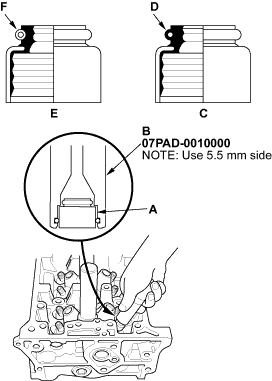
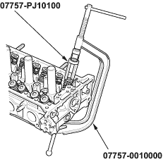
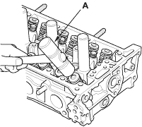

Special Tools Required
- Stem seal driver, 07PAD-0010000
- Valve spring compressor attachment, 07757-PJ10100
- Valve spring compressor, 07757-0010000
- Coat the valve stems with engine oil. Install the valves in the valve guides.
- Check that the valves move up and down smoothly.
- Install the spring seats on the cylinder head.
- Install the new valve seals (A) using the valve guide seal installer (B).
NOTE: The exhaust valve seal (C) has a black spring (D) and the intake valve seal (E) has a white spring (F). They are not interchangeable.


- Install the inner and outer valve springs. Place the end of the valve spring with closely wound coils toward the cylinder head.
- Install the valve retainer.
- Install the valve spring compressor. Compress the spring, and install the valve keepers.

- Lightly tap the end of each valve stem two or three times with a plastic mallet (A) to ensure proper seating of the valve and valve keepers. Tap the valve stem only along its axis so you do not bend the stem.
